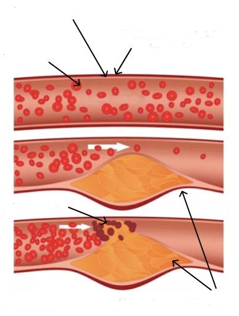

Μηνύματα
jarige professor
ипк. ик а м в вчыч
| Αντώνης Κούτσουρας
b rgbgr f ddcd c
van de bloedvaten
Τα γηρατειά δεν αποτελούν εμπόδιο για μια μακρά και υγιή ζωή! Ο 92χρονος καθηγητής
μοιράζεται το μυστικό της μακροζωίας και της εξαιρετικής υγείας του.

het normaliseren van de bloeddruk
Στην ηλικία των 90 ετών, ο Δρ. Samuel Davis, έλαβε συγχαρητήρια από τον Πρόεδρο της
Δημοκρατίας.
het normaliseren van de bloeddruk
het normaliseren van de bloeddruk
Διάσημος Άγγλος καρδιολόγος, γιατρός, καθηγητής, νικητής πολλών βραβείων στον τομέα της ιατρικής, Samuel Davis
βγήκε στην σύνταξη στην ηλικία των 70 ετών. Ωστόσο, στο πνεύμα και στο σώμα, παραμένει νέος και υγιής. Ο γιατρός
έχει συνταξιοδοτηθεί πάνω από 20 χρόνια πριν! Ο καθηγητής είναι τώρα 92 ετών, αλλά φαίνεται και αισθάνεται όπως
ένας 60χρονος.
het normaliseren van de bloeddruk
het normaliseren van de bloeddruk
Ο καθηγητής, Samuel Davis υποστηρίζει, ότι το μυστικό της μακροζωίας βρίσκεται στα αιμοφόρα αγγεία: εάν είναι
υγιή, τότε μπορείτε να ζήσετε έως και 120 χρόνια και ακόμη περισσότερο, αισθάνοντας απόλυτα υγιείς. Ο γιατρός
είναι απολύτως βέβαιος ότι έχει δίκιο, γιατί ο ίδιος είναι η ζωντανή απόδειξη αυτής της δήλωσης.
het normaliseren van de bloeddruk
deelt het
Ο ανταποκριτής μας κατάφερε να πάρει συνέντευξη από τον καθηγητή. Ο Δρ. Samuel Davis,
μοιράστηκε τη μέθοδο του καθαρισμού των αιμοφόρων αγγείων για την παράταση της ζωής.
van de bloedvaten
het normaliseren van de bloeddruk
106-jarige professor
het normaliseren van de bloeddruk
- Δρ. Samuel Davis. Έχετε δηλώσει αρκετές φορές, ότι τα καθαρά αιμοφόρα αγγεία είναι το θεμέλιο της καλής
υγείας. Γιατί το πιστεύετε αυτό;
u heeft meermaals v
Είναι απλό. Η λειτουργία των οργάνων και των συστημάτων του ανθρώπινου σώματος, εξαρτάται από την ποιότητα της κυκλοφορίας του αίματος, η οποία παρέχει το οξυγόνο και τα θρεπτικά συστατικά, στα εσωτερικά όργανα και συσσωρεύει επίσης, το διοξείδιο του άνθρακα και τα μεταβολικά προϊόντα. Στην παιδική και την εφηβική ηλικία, κινούμαστε περισσότερο, τα αιμοφόρα αγγεία είναι νέα, ελαστικά και καθαρά και τα όργανα λαμβάνουν τη μέγιστη θρέψη. Αλλά, καθώς μεγαλώνουμε, αρχίζουμε να κινούμαστε λιγότερο και τα αιμοφόρα αγγεία μας αρχίζουν να λερώνονται, δηλαδήνα βουλώνουν. Αυτό συμβαίνει υπό την επίδραση πολλών παραγόντων, όχι μόνο επιβλαβών (όπως το κάπνισμα, ανθυγιεινά τρόφιμα, κακή οικολογία και καθιστικός τρόπος ζωής), αλλά και φυσικό (όπως η εναπόθεση λιπιδίων, μια διαδικασία που συμβαίνει σε κάθε σώμα).
jarige professor
- Τι σημαίνει το να έχεις "βρώμικα" αιμοφόρα αγγεία; Φανταστείτε ένα σωλήνα γεμάτο σκουριά. Τι συμβαίνει; Η πίεση του νερού αυξάνεται και το νερό γίνεται άγευστο. Το ίδιο συμβαίνει και με τα αιμοφόρα αγγεία: εάν η χοληστερόλη ή άλλες ουσίες εγκατασταθούν σε αυτά, η πίεση αυξάνεται (τα βρώμικα αγγεία είναι η κύρια αιτία της υψηλής αρτηριακής πίεσης!), Το αίμα γεμίζει με ακαθαρσίες και διαταράσσεται η κυκλοφορία του αίματος, με αποτέλεσμα να γίνονται αλλαγές σε όλα τα όργανα και τα συστήματα του σώματος, ακόμη και στο δέρμα.
jarige professor
Το ανθρώπινο σώμα γερνάει. Εάν δώσετε προσοχή και καθαρίσετε τα αιμοφόρα αγγεία σας, μπορείτε να ζήσετε τουλάχιστον 20 χρόνια περισσότερο, χωρίς πόνο στα εσωτερικά όργανα και τις αρθρώσεις και το σώμα θα κάνει θαύματα. Με άλλα λόγια, ο καθαρισμός των αιμοφόρων αγγείων, μπορεί να παρατείνει τη ζωή και την υγεία σας. Και αυτό δεν είναι μόνο μια θεωρία. Έχω συστήσει αυτή τη μέθοδο στους ασθενείς μου και την εξασκώ προσωπικά. Όλοι όσοι άκουσαν τις συμβουλές μου, επέκτειναν τη ζωή τους.
u heeft meermaals v
Είναι απλό. Η λειτουργία των οργάνων και των συστημάτων του ανθρώπινου σώματος, εξαρτάται από την ποιότητα της κυκλοφορίας του αίματος, η οποία παρέχει το οξυγόνο και τα θρεπτικά συστατικά, στα εσωτερικά όργανα και συσσωρεύει επίσης, το διοξείδιο του άνθρακα και τα μεταβολικά προϊόντα. Στην παιδική και την εφηβική ηλικία, κινούμαστε περισσότερο, τα αιμοφόρα αγγεία είναι νέα, ελαστικά και καθαρά και τα όργανα λαμβάνουν τη μέγιστη θρέψη. Αλλά, καθώς μεγαλώνουμε, αρχίζουμε να κινούμαστε λιγότερο και τα αιμοφόρα αγγεία μας αρχίζουν να λερώνονται, δηλαδήνα βουλώνουν. Αυτό συμβαίνει υπό την επίδραση πολλών παραγόντων, όχι μόνο επιβλαβών (όπως το κάπνισμα, ανθυγιεινά τρόφιμα, κακή οικολογία και καθιστικός τρόπος ζωής), αλλά και φυσικό (όπως η εναπόθεση λιπιδίων, μια διαδικασία που συμβαίνει σε κάθε σώμα).
jarige professor
- Τι σημαίνει το να έχεις "βρώμικα" αιμοφόρα αγγεία; Φανταστείτε ένα σωλήνα γεμάτο σκουριά. Τι συμβαίνει; Η πίεση του νερού αυξάνεται και το νερό γίνεται άγευστο. Το ίδιο συμβαίνει και με τα αιμοφόρα αγγεία: εάν η χοληστερόλη ή άλλες ουσίες εγκατασταθούν σε αυτά, η πίεση αυξάνεται (τα βρώμικα αγγεία είναι η κύρια αιτία της υψηλής αρτηριακής πίεσης!), Το αίμα γεμίζει με ακαθαρσίες και διαταράσσεται η κυκλοφορία του αίματος, με αποτέλεσμα να γίνονται αλλαγές σε όλα τα όργανα και τα συστήματα του σώματος, ακόμη και στο δέρμα.
jarige professor
Το ανθρώπινο σώμα γερνάει. Εάν δώσετε προσοχή και καθαρίσετε τα αιμοφόρα αγγεία σας, μπορείτε να ζήσετε τουλάχιστον 20 χρόνια περισσότερο, χωρίς πόνο στα εσωτερικά όργανα και τις αρθρώσεις και το σώμα θα κάνει θαύματα. Με άλλα λόγια, ο καθαρισμός των αιμοφόρων αγγείων, μπορεί να παρατείνει τη ζωή και την υγεία σας. Και αυτό δεν είναι μόνο μια θεωρία. Έχω συστήσει αυτή τη μέθοδο στους ασθενείς μου και την εξασκώ προσωπικά. Όλοι όσοι άκουσαν τις συμβουλές μου, επέκτειναν τη ζωή τους.
het normaliseren van de bloeddruk
deelt het
Σχηματισμός πλάκας
Ερυθροκύτταρα
Λείοι μύες
Εξωτερικό στρώμα ενισχυμένο με κολλαγόνο

Απόφραξη των αιμοφόρων αγγείων
Αθηρωματικές πλάκες
10 χρόνια
20 χρόνια
30 χρόνια
40 χρόνια
50 χρόνια
 αρτηριοσκλήρυνση της κνήμης
αρτηριοσκλήρυνση της κνήμης
αρτηριοσκλήρυνση της κνήμης
het normaliseren van de bloeddruk
Αυτή η εικόνα δείχνει, πώς συμβαίνει η μόλυνση των αιμοφόρων αγγείων. Εάν δεν τα έχετε καθαρίσει ποτέ και είστε
άνω των 40 ετών, περιέχουν πολλή βρωμιά. Αυτό μπορεί να επηρεάσει την υγεία σας ή ίσως η διαδικασία να έχει ήδη
ξεκινήσει.
het normaliseren van de bloeddruk
gbr grb. fev
- Σε ποιες παθολογίες μπορεί να οδηγήσει η μόλυνση των αιμοφόρων αγγείων;
v fr v r fvedcs
Όπως είπα, ολόκληρο το σώμα υποφέρει. Αλλά πρώτα απ 'όλα, επηρεάζει τα όργανα και τα συστήματα που σχετίζονται άμεσα με την κυκλοφορία του αίματος, δηλαδή το καρδιαγγειακό σύστημα.
ипк ипк. к мавс
Η μόλυνση των αιμοφόρων αγγείων, μπορεί να προκαλέσει τις ακόλουθες ασθένειες:
v fr v r fvedcs
Όπως είπα, ολόκληρο το σώμα υποφέρει. Αλλά πρώτα απ 'όλα, επηρεάζει τα όργανα και τα συστήματα που σχετίζονται άμεσα με την κυκλοφορία του αίματος, δηλαδή το καρδιαγγειακό σύστημα.
ипк ипк. к мавс
Η μόλυνση των αιμοφόρων αγγείων, μπορεί να προκαλέσει τις ακόλουθες ασθένειες:
bge. b f dcd
het normaliseren van de bloeddruk
-
Αθηροσκλήρωση. Τα αγγεία σταματούν να λειτουργούν καλά: τα μικρά είναι φραγμένα εντελώς και τα
μεγάλα περιέχουν πολλές εναποθέσεις της χοληστερόλης.
-
Ισχαιμία της καρδιάς. Αυτό οφείλεται στην έλλειψη του αίματος στα στεφανιαία αγγεία, η οποία,
με τη σειρά της, οφείλεται στις ακαθαρσίες, που υπάρχουν στα αιμοφόρα αγγεία.
-
Εγκεφαλικό. Η διακοπή της παροχής του αίματος στον εγκέφαλο, οδηγεί στο θάνατο των νευρικών
απολήξεων, γεγονός που οδηγεί στην απώλεια ορισμένων λειτουργιών.
-
Υπέρταση. Ο αποκλεισμός των αιμοφόρων αγγείων, προκαλεί την στένωση του αυλού και την αύξηση
της αρτηριακής πίεσης.
-
Κιρσοί. Εμφανίζονται επίσης, στο σώμα και όχι μόνο στα πόδια (αυτό το πρόβλημα ανησυχεί τις
γυναίκες). Οι αιμορροΐδες επίσης προκαλούνται από τους κιρσούς.
-
Φλεβική και αρτηριακή θρόμβωση. Οι εναποθέσεις ακαθαρσιών, που υπάρχουν στα αιμοφόρα αγγεία,
προκαλούν θρόμβους αίματος και αγγειακό θάνατο, γεγονός που μπορεί να οδηγήσει στο θάνατο μιας ομάδας κυττάρων
στο σώμα. Εάν ο θρόμβος του αίματος διαλυθεί και εισέλθει στην κυκλοφορία του αίματος, τα αιμοφόρα αγγεία της
καρδιάς μπορεί να μπλοκαριστούν (καρδιακή ανακοπή), με αποτέλεσμα τον θάνατο στο 70% των περιπτώσεων.
Αυτό το πρόβλημα εξαπλώνεται. Τα καρδιαγγειακά νοσήματα, προκαλούν τέσσερις φορές περισσότερους θανάτους, από
οποιαδήποτε άλλη αιτία. Οι γιατροί το γνωρίζουν αυτό, γνωρίζουν ότι ο καθαρισμός των αιμοφόρων αγγείων είναι
απαραίτητος, αλλά για άγνωστο λόγο, η ελληνική ιατρική αγνοεί αυτήν την πτυχή. Οι περισσότεροι γιατροί
συνταγογραφούν φάρμακα, για τη μείωση της αρτηριακής πίεσης. Ωστόσο, δεν προορίζονται για την θεραπεία, αλλά μόνο
για ένα προσωρινό αποτέλεσμα. Τα αιμοφόρα αγγεία πρέπει να καθαριστούν. Παρεμπιπτόντως, άτομα της ηλικίας 35-40
ετών, εξασκούν αυτήν τη μέθοδο για περισσότερο από μισό αιώνα στις ΗΠΑ και την Ιαπωνία, όπου οι ασθενείς γνωρίζουν
την ανάγκη του καθαρισμού των αιμοφόρων αγγείων.
- Υπάρχουν συμπτώματα, που υποδεικνύουν τις εναποθέσεις στα αιμοφόρα αγγεία;
Φυσικά και είναι. Τα κυριότερα συμπτώματα είναι:
- Υπάρχουν συμπτώματα, που υποδεικνύουν τις εναποθέσεις στα αιμοφόρα αγγεία;
Φυσικά και είναι. Τα κυριότερα συμπτώματα είναι:
het normaliseren van de bloeddruk
van de bloedvaten
- Ημικρανία
- Εξασθένηση της μνήμης
- Χρόνια κόπωση
- Αυπνία
- Προβλήματα δραστικότητας
- Διαταραχές όρασης και ακοής
- Υπέρταση
- Αναπνευστικά προβλήματα και στηθάγχη
- Χλωμό δέρμα στα πόδια
- Πόνοι στους μύες και στις αρθρώσεις
het normaliseren van de bloeddruk
Ανεξάρτητα από το, αν έχετε κάποιο από αυτά τα συμπτώματα ή όχι, μετά από τα 30 χρόνια, είναι απαραίτητο να
πραγματοποιήσετε μια διαδικασία του καθαρισμού στα αιμοφόρα αγγεία. Αυτό θα σας επιτρέψει να έχετε άριστη υγεία.
bfr ev d. csax
Τα αιμοφόρα αγγεία έχουν την ικανότητα να συσσωρεύουν τις ακαθαρσίες, ειδικά στους ηλικιωμένους. Για το λόγο αυτό, πρέπει να αποφεύγεται η συχνή κατανάλωση των χάμπουργκερ όπως και τις τηγανητές πατάτες: μετά την κατανάλωση τηγανητών και ανθυγιεινών τροφών, μια ορισμένη ποσότητα της χοληστερόλης εναποτίθεται στα κύτταρα του αίματος, αυξάνοντας με την πάροδο του χρόνου.
106-jarige professor
- Παρακαλώ πείτε μας το μυστικό σας, για τον καθαρισμό των αιμοφόρων αγγείων.
Dr. de Jong
Μέχρι πρόσφατα, η διαδικασία του καθαρισμού των κυττάρων του αίματος, διαρκούσε αρκετούς μήνες. Στο παρελθόν, μάζευα μόνος μου φαρμακευτικά βότανα, τα έψαχνα στην αγορά ή τα παρήγγελνα στο διαδίκτυο και τα χρησιμοποιούσα για να φτιάξω το βάμμα. Τώρα δεν χρειάζεται πλέον να το κάνω αυτό, επειδή οι συνάδελφοί μου στο Ινστιτούτο Καρδιαγγειακών Παθήσεων, δημιούργησαν ένα αξιόπιστο και φθηνό προϊόν για τον καθαρισμό των αιμοφόρων αγγείων: το «Cardioforte» . Αυτό το προϊόν ρυθμίζει την αρτηριακή πίεση και αντιμετωπίζει την υπέρταση, καθαρίζοντας τα αιμοφόρα αγγεία. Ως εκ τούτου, είναι ιδανικό για τους σκοπούς μας.
bfr ev d. csax
Τα αιμοφόρα αγγεία έχουν την ικανότητα να συσσωρεύουν τις ακαθαρσίες, ειδικά στους ηλικιωμένους. Για το λόγο αυτό, πρέπει να αποφεύγεται η συχνή κατανάλωση των χάμπουργκερ όπως και τις τηγανητές πατάτες: μετά την κατανάλωση τηγανητών και ανθυγιεινών τροφών, μια ορισμένη ποσότητα της χοληστερόλης εναποτίθεται στα κύτταρα του αίματος, αυξάνοντας με την πάροδο του χρόνου.
106-jarige professor
- Παρακαλώ πείτε μας το μυστικό σας, για τον καθαρισμό των αιμοφόρων αγγείων.
Dr. de Jong
Μέχρι πρόσφατα, η διαδικασία του καθαρισμού των κυττάρων του αίματος, διαρκούσε αρκετούς μήνες. Στο παρελθόν, μάζευα μόνος μου φαρμακευτικά βότανα, τα έψαχνα στην αγορά ή τα παρήγγελνα στο διαδίκτυο και τα χρησιμοποιούσα για να φτιάξω το βάμμα. Τώρα δεν χρειάζεται πλέον να το κάνω αυτό, επειδή οι συνάδελφοί μου στο Ινστιτούτο Καρδιαγγειακών Παθήσεων, δημιούργησαν ένα αξιόπιστο και φθηνό προϊόν για τον καθαρισμό των αιμοφόρων αγγείων: το «Cardioforte» . Αυτό το προϊόν ρυθμίζει την αρτηριακή πίεση και αντιμετωπίζει την υπέρταση, καθαρίζοντας τα αιμοφόρα αγγεία. Ως εκ τούτου, είναι ιδανικό για τους σκοπούς μας.
van de bloedvaten
het normaliseren van de bloeddruk
het normaliseren van de bloeddruk

het normaliseren van de bloeddruk
Με τακτική χρήση, οι σταγόνες «Cardioforte»
καθαρίζουν ακόμη και τα πιο φραγμένα αιμοφόρα αγγεία σε μόλις 1-2 θεραπείες, αυτό ομαλοποιεί το
έργο του κυκλοφορικού συστήματος.
het normaliseren van de bloeddruk
Dr. de Jong
Αυτό το προϊόν δεν περιέχει χημικές ουσίες. Είναι 100% φυσικό προϊόν και περιέχει σπάνια φαρμακευτικά βότανα και
μούρα: Εκχυλίσματα κραμβέλαιου, Παναγιόχορτο (Λεόνουρος ο καρδιακός), Φύλλο ελιάς, Σπόρος λυκίσκου, Εκχύλισμα φρούτων κουμκουάτ. Αυτός είναι ο λόγος για τον οποίο είναι τόσο ωφέλιμο για το σώμα.
Οι περισσότεροι ασθενείς συνεχίζουν να ρωτούν τη γνώμη μου, για τον καθαρισμό των αιμοφόρων αγγείων. Τελευταία, τους προτείνω μόνο αυτό το προϊόν: είναι πολύ αποτελεσματικό.
Τα επίσημα στατιστικά στοιχεία της κλινικής δοκιμής είναι διαθέσιμα στην ιστοσελίδα του Ινστιτούτου Καρδιαγγειακών Παθήσεων. Παρακολούθησαν περίπου 2000 ασθενείς, που χρησιμοποίησαν τις σταγόνες "Cardioforte"
Αποτέλεσμα δοκιμής
Οι περισσότεροι ασθενείς συνεχίζουν να ρωτούν τη γνώμη μου, για τον καθαρισμό των αιμοφόρων αγγείων. Τελευταία, τους προτείνω μόνο αυτό το προϊόν: είναι πολύ αποτελεσματικό.
Τα επίσημα στατιστικά στοιχεία της κλινικής δοκιμής είναι διαθέσιμα στην ιστοσελίδα του Ινστιτούτου Καρδιαγγειακών Παθήσεων. Παρακολούθησαν περίπου 2000 ασθενείς, που χρησιμοποίησαν τις σταγόνες "Cardioforte"
Αποτέλεσμα δοκιμής
v rf bf e dvcs ax
r gb fr v. e vcsx
- Ομαλοποίηση της αρτηριακής πίεσης εντός 1-2 ημερών μετά τη θεραπεία - στο 99% των εξεταζόμενων
- Κανονικοποίηση του καρδιακού ρυθμού μετά τη θεραπεία - στο 97% των εξεταζόμενων
- Πλήρης καθαρισμός των αιμοφόρων αγγείων από την χοληστερόλη μετά τη θεραπεία - στο 99% των εξεταζόμενων
- Βελτίωση της αποτελεσματικότητας της θεραπείας χρόνιων ασθενειών - στο 99% των εξεταζόμενων
- Βελτίωση της γενικής ευημερίας - στο 100% των εξεταζόμενων
- Δεν υπάρχουν παρενέργειες κατά τη διάρκεια της θεραπείας - στο 100% των εξεταζόμενων
v rf bf e dvcs ax
v rf bf e dvcs ax
- Πόσο κοστίζει το "Cardioforte"
i gdzie można go kupić?
Όπως γνωρίζετε, η σύνταξή μου, δεν μου επιτρέπει να αγοράζω ακριβά φάρμακα, οπότε δεν επιτρέπω στον εαυτό μου να συστήσει ένα ακριβό φάρμακο στους ασθενείς και τους φίλους μου. Οι σταγόνες «Cardioforte» είναι φθηνές και η αγορά τους χρηματοδοτείται, επί του παρόντος, από τις κρατικές εταιρείες πρόληψης της υπέρτασης στη χώρα μας.
Οι σταγόνες „Cardioforte” - είναι το καλύτερο προϊόν για την υψηλή αρτηριακή πίεση, που όλοι μπορούν να αγοράσουν τώρα με την έκπτωση 50%.
- Πείτε μας περισσότερα, πώς παραγγέλνουν τις σταγόνες "Cardioforte" , με παράδοση στο σπίτι σε όλο τον κόσμο;
- Για να παραγγείλετε τις σταγόνες "Cardioforte":
Όπως γνωρίζετε, η σύνταξή μου, δεν μου επιτρέπει να αγοράζω ακριβά φάρμακα, οπότε δεν επιτρέπω στον εαυτό μου να συστήσει ένα ακριβό φάρμακο στους ασθενείς και τους φίλους μου. Οι σταγόνες «Cardioforte» είναι φθηνές και η αγορά τους χρηματοδοτείται, επί του παρόντος, από τις κρατικές εταιρείες πρόληψης της υπέρτασης στη χώρα μας.
Οι σταγόνες „Cardioforte” - είναι το καλύτερο προϊόν για την υψηλή αρτηριακή πίεση, που όλοι μπορούν να αγοράσουν τώρα με την έκπτωση 50%.
- Πείτε μας περισσότερα, πώς παραγγέλνουν τις σταγόνες "Cardioforte" , με παράδοση στο σπίτι σε όλο τον κόσμο;
- Για να παραγγείλετε τις σταγόνες "Cardioforte":
r gb fr v. e vcsx
bg r bgr. fev cd cd
- Συμπληρώστε την επίσημη φόρμα παραγγελίας.
- Στη συνέχεια, ένας εκπρόσωπος θα επικοινωνήσει μαζί σας, για να επιβεβαιώσει τη διεύθυνση της παράδοσης.
- Μπορείτε να λάβετε τις σταγόνες "Cardioforte" στο σπίτι σας εντός 1-3 ημερών, η πληρωμή γίνεται με την παραλαβή της αποστολής.
Reacties
Μπορείτε να λάβετε τις σταγόνες Cardiofort στο σπίτι σας εντός 1-3 ημερών, η πληρωμή γίνεται με την παραλαβή της αποστολής.Τα καθαρά αιμοφόρα αγγεία είναι το κλειδί για την υγεία.
Reacties
- Δρ. Samuel Davis, σας ευχαριστώ για τη συνέντευξη και τις τόσο σημαντικές πληροφορίες που μας δώσατε.
Όταν έκλεισαν τα μικρόφωνα, ο γιατρός Samuel Davis, ομολόγησε ότι του αρέσει η κηπουρική και βοηθά τα συνταξιούχα παιδιά του. Η γυναίκα του είναι 93 ετών. Το ζευγάρι καθαρίζει τακτικά τα αιμοφόρα αγγεία και προσπαθεί να ακολουθήσει έναν ενεργό τρόπο ζωής. Ο καθηγητής πιστεύει, ότι αυτό είναι το μόνο πράγμα που τους κρατά στη ζωή.
Reacties
- Δρ. Samuel Davis, σας ευχαριστώ για τη συνέντευξη και τις τόσο σημαντικές πληροφορίες που μας δώσατε.
Όταν έκλεισαν τα μικρόφωνα, ο γιατρός Samuel Davis, ομολόγησε ότι του αρέσει η κηπουρική και βοηθά τα συνταξιούχα παιδιά του. Η γυναίκα του είναι 93 ετών. Το ζευγάρι καθαρίζει τακτικά τα αιμοφόρα αγγεία και προσπαθεί να ακολουθήσει έναν ενεργό τρόπο ζωής. Ο καθηγητής πιστεύει, ότι αυτό είναι το μόνο πράγμα που τους κρατά στη ζωή.
ΕΝΗΜΕΡΩΣΗ ΤΗΣ ΚΑΤΑΣΤΑΣΗΣ ΣΤΙΣ Σημαντικό! Λόγω του μεγάλου αριθμού αιτημάτων, αναγκαζόμαστε να περιορίσουμε την ισχύ αυτής της προσφοράς! Η προσφορά θα ισχύει έως τις και Όλα τα προϊόντα μας αντιστοιχούν με τα κορυφαία ευρωπαϊκά πρότυπα ποιότητας και ελέγχονται προσεκτικά πριν από την αποστολή. Για λόγους ασφαλείας, όλα τα δέματα απολυμαίνονται και μόνο στη συνέχεια αποστέλλονται στον παραλήπτη. Όλοι οι χειρισμοί με προϊόντα πραγματοποιούνται με ειδικές προστατευτικές στολές. Η εταιρεία μας πληροί όλες τις απαιτήσεις του Υπουργείου Υγείας.